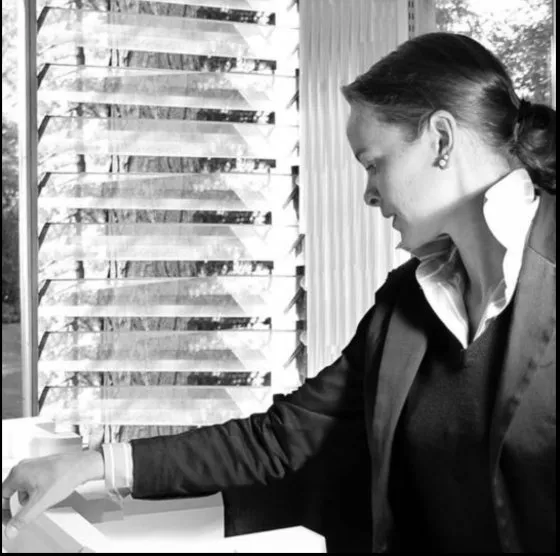

Valeska ZohmValeska Zohm
Architektin
Geboren 1975 in Aachen, studierte Valeska von der Decken Architektur an der TH Kaiserslautern und schloss ihr Diplom an der renommierten RWTH Aachen ab.
Nach Stationen bei namhaften Büros – darunter eine langjährige Zusammenarbeit mit Professor Joachim Schürmann – ist sie seit 2017 als selbstständige Architektin in München tätig.
Ihre Projekte verbinden architektonische Präzision mit einem feinen Gespür für Atmosphäre, Materialität und das Leben im Raum.
- 1975Geboren in Aachen
- Vordip.TH Kaiserslautern
- DiplomRWTH Aachen
- 2001Mescherowsky Architekten, Aachen
- 2002–03JSP / jsa – Joachim Schürmann
- 2005Partnerschaft mit Prof. Joachim Schürmann
- 2014Selbstständig in Stuttgart
- 2017Selbstständig in München